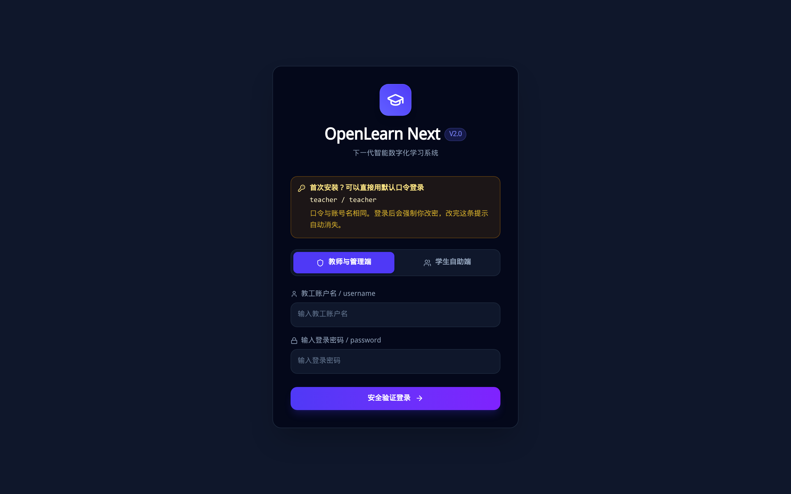
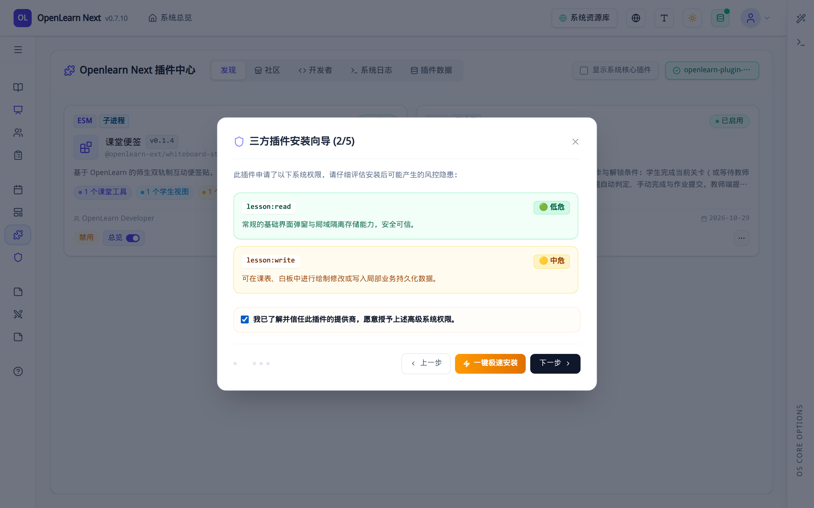
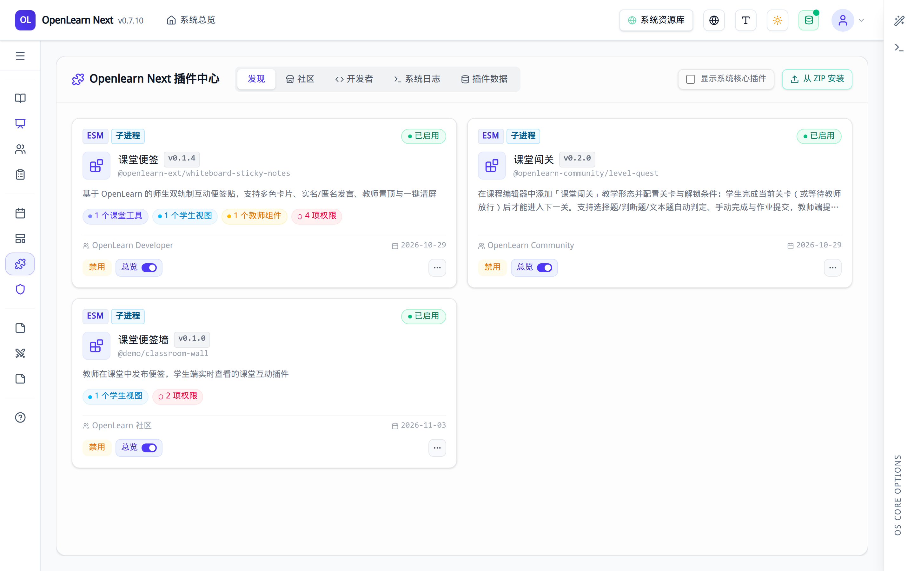
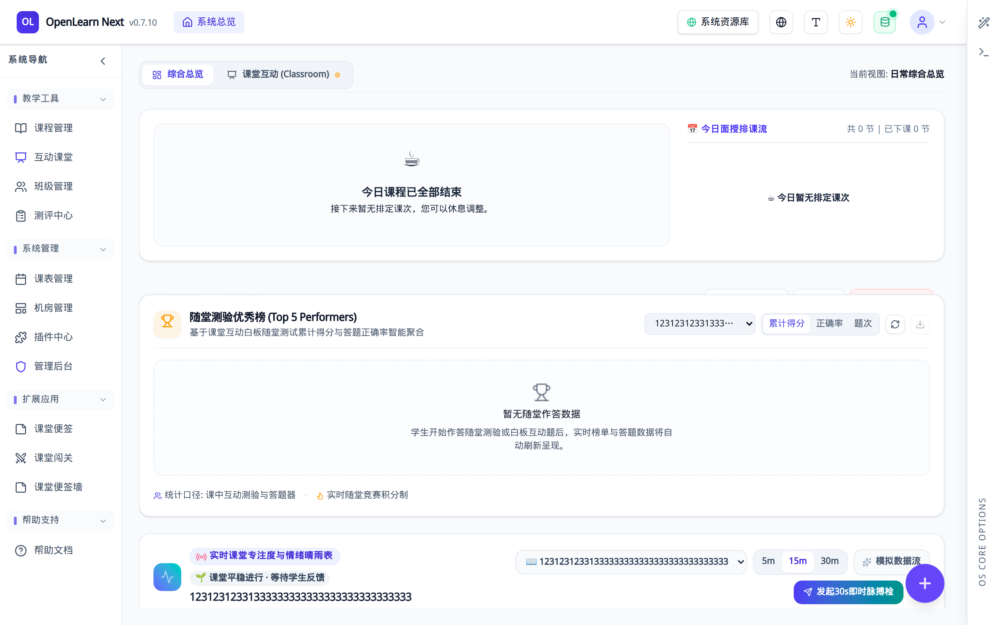
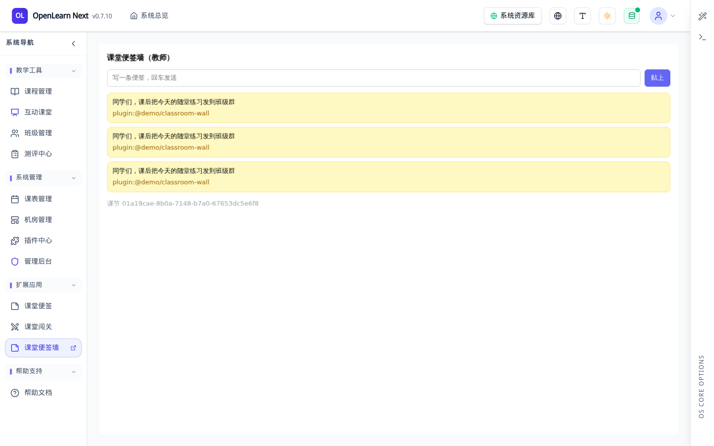
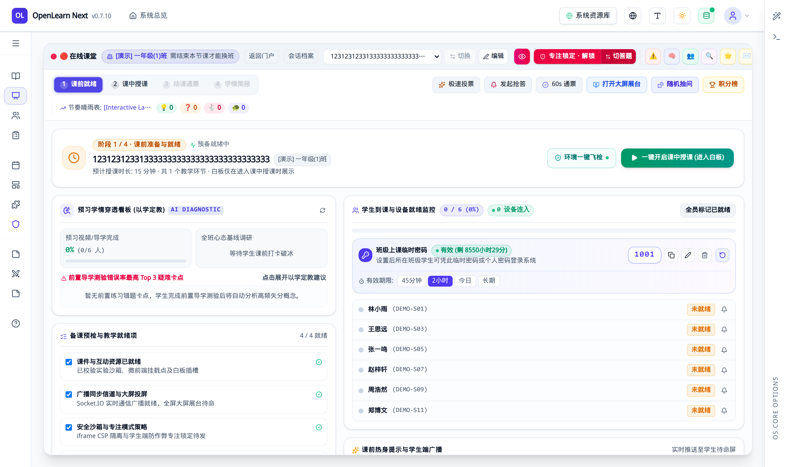
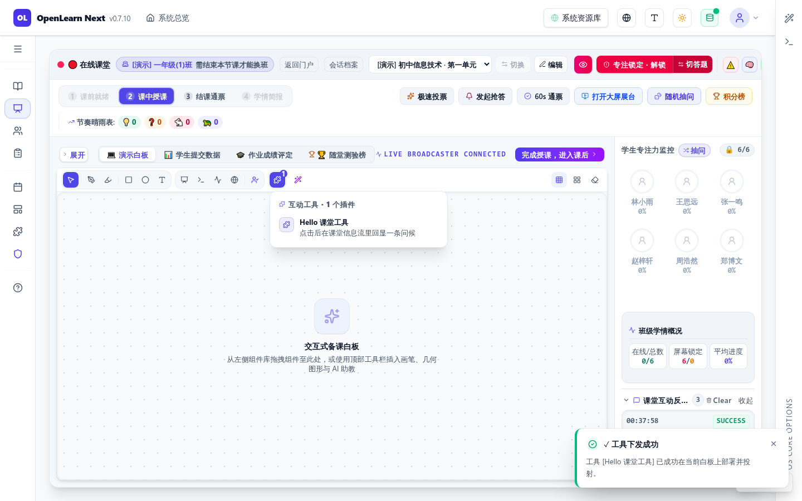
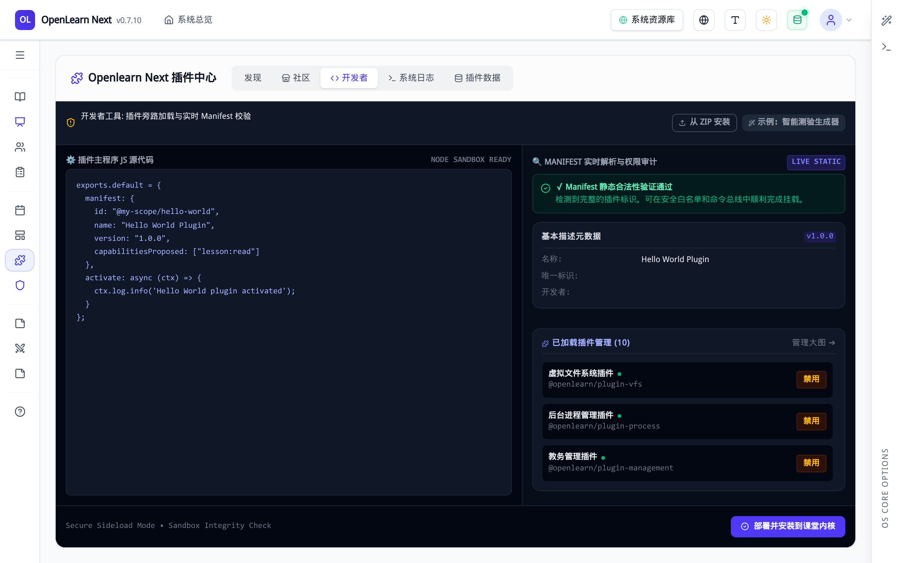
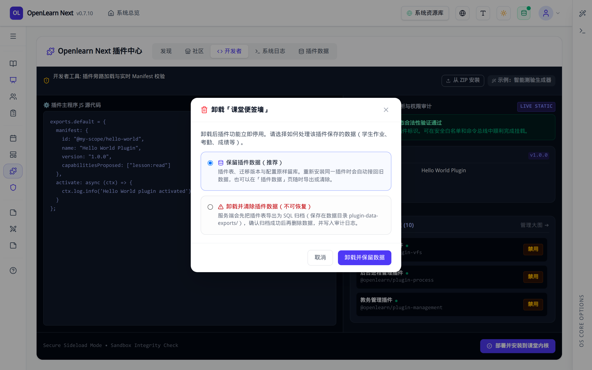

PLUGIN SKILL
OPENLEARN V2 · 插件开发手册
如何使用 AI Skill
本手册专为使用 AI 编程助手开发 OpenLearn V2 插件的人 编写。 平台的底层架构、Manifest
规范、沙箱通信契约与单元测试护栏，全部由 AI Agent 通过
openlearn-next-plugin-dev 技能自动掌握。你不需要手写代码，只需按照本手册：
装好 Skill → 跟 AI 聊清楚需求 → 拿到 ZIP 包上传后台 → 进课堂点开使用 。
适用环境：Node.js 24 本地运行（无需 Docker） · 支持 GitHub 主仓与 Gitee 国内镜像
目录 CONTENTS
人机分工：你做什么 vs AI 自动做什么
环境准备：启动平台与安装 Skill（双源 + 离线）
第 1 步：唤醒 Skill 与源码就绪确认
第 2 步：像做选择题一样确认需求（Grilling 问答）
第 3 步：AI 自动生成、自测与打包 ZIP
第 4 步：登录管理后台与启动安装向导（配图）
第 5 步：勾选两道权限防线与启用插件（配图）
第 6 步：在教师工作台打开并使用插件（配图）
第 7 步：在课堂白板中调用插件工具（配图）
第 8 步：开发者页签预览与装后一键自检（配图）
第 9 步：对话式改功能、平滑升级与卸载（配图）
第 10 步：遇到问题怎么让 AI 排障与全流程速查卡
SECTION 01 · OVERVIEW
一、人机分工：你做什么 vs AI 自动做什么
传统插件开发需要开发者自己去读几万字的 API 文档、背权限字符串、研究沙箱桥接与打包结构。 而在装上
openlearn-next-plugin-dev 技能后，所有底层原理与编码规则都由 AI Agent 自己去读取和遵守 ， 你只需要扮演「产品经理 + 课堂验收人」的角色。
0 行
你需要手写的底层代码
6 道单选题
需求梳理交互（Grilling）
1 个 ZIP 包
AI 交付的最终产物
5 分钟
后台上传与课堂验收
1.1 清晰边界：哪些事归你操作，哪些事交给 AI？
阶段
你（人）需要做的操作
AI Agent（通过 Skill）在幕后自动完成的事
① 准备阶段 启动本地平台；用一行命令给 AI 助手装上 Skill
自动探活本地端口（如 9000）、核对平台与 SDK 版本、检查平台源码或启用离线快照
② 需求阶段 说出一句话教学想法；依次回答 AI 提出的单选题（选 A/B/C）
按 Grilling 决策树逐题引导，自动拦截不合规方案，生成 plugin.contract.json 设计契约
③ 开发与打包 回复一句「确认，开始生成并打包」，等待约 1～2 分钟
选模板生成骨架、编写前后端代码、跑通 L0 静态检查与 L1/L2 单元测试、打包出含 storage/** 的
.zip
④ 安装与授权 登录后台「插件中心」→ 点「从 ZIP 安装」→ 勾选两处权限确认框
可选运行 post-install-check.sh，自动帮你核对数据库中插件激活状态与静态文件落盘
⑤ 课堂验收 在左侧「扩展应用」或课堂白板「互动工具」里点开试用
若你想改界面或遇到报错，把想法或报错粘给 AI，AI 自动归因、改代码、升版本号并重打新包
1.2 你只需走完这 6 步
你做 · 第 1 步
装好平台与 Skill
本地起好 9000 端口服务，把 Skill 装进 Claude Code / Antigravity / Cursor / pi。
你做 · 第 2 步
一句话唤醒 AI
告诉 AI 你想做什么课堂工具，首次运行时选 [1] 后台同步或快照模式。
你做 · 第 3 步
回答几道单选题
告诉 AI 给老师用还是学生用、要不要存数据、要不要给课堂 AI 调用。
AI 做 · 第 4 步
AI 生成并交出 ZIP
AI 自己写代码、跑护栏测试、打好 .zip 包，把文件路径交给你。
你做 · 第 5 步
后台上传与勾选授权
在插件中心上传 ZIP，在安装向导第 2 步和第 5 步勾上授权框。
你做 · 第 6 步
进课堂点开使用
在教师端导航或课堂白板里直接使用；不满意就继续跟 AI 对话迭代。
阅读提示：本手册不讲底层代码
你不需要去记 ActionDescriptor、CommandBus 或沙箱桥接函数怎么写——那是 Skill 教给 AI
Agent 的内容。 接下来每一章，我们只展示你在终端和浏览器里每一步具体怎么操作 。
SECTION 02 · ENVIRONMENT SETUP
二、环境准备：启动平台与安装 Skill（无需 Docker）
首批开发与试用完全基于本地 Node.js 24 环境，不需要安装或配置 Docker 。
同时，平台与 Skill 均已提供 GitHub 主仓 + Gitee 国内镜像 双通道，国内网络也能顺畅拉取。
2.1 启动本地 OpenLearn V2 平台（二选一）
A
方式 A：npx 一键启动（最快，不克隆源码也能装插件）
只要电脑装有 Node.js（推荐 v24），在终端运行下面任一命令即可直接拉起完整平台：
# 启动正式实例（默认访问 http://localhost:9000）
npx openlearn-next@latest -o
# 或：启动自带课程/班级/学生的演示实例（含演示教师账号 demo_teacher / Demo@2026）
npx openlearn-next@latest --demo -o
B
方式 B：克隆源码本地运行（适合长期开发，AI 可直接读取本地源码核对契约）
# ① 克隆仓库（GitHub 主仓；国内网络受限时直接用下方第 2 行的 Gitee 镜像，内容一致）
git clone https://github.com/aymwoo/OpenLearn-Next-V2.git OpenLearn-Next-V2
# git clone https://gitee.com/aymwoo/openlearn-next.git OpenLearn-Next-V2
# ② 安装依赖并启动开发服（默认端口 9000；也可跑 pnpm dev:demo 启动带数据的演示服）
cd OpenLearn-Next-V2 corepack enable && corepack prepare pnpm@10.33.4 --activate pnpm install
&& cp .env.example .env pnpm dev
2.2 给你的 AI 编程助手安装插件开发 Skill（三种通道任选）
打开终端，根据你的网络情况选择以下任一方式，将 openlearn-next-plugin-dev 技能装入你的 AI 助手：
# 通道 ①：通过 skills.sh 官方注册表安装（能正常访问 GitHub 时使用）
npx skills add aymwoo/openlearn-skills/openlearn-next-plugin-dev
# 通道 ②：国内网络首选 —— 直连 Gitee 镜像安装
# 注意：必须写完整的 https://gitee.com/...git 地址，不要用简写（简写会默认连向 GitHub）
npx skills add https://gitee.com/aymwoo/openlearn-skills.git
# 通道 ③：完全离线 / 手动拷贝兜底（100% 稳妥，不依赖 skills CLI）
git clone https://gitee.com/aymwoo/openlearn-skills.git cp -r openlearn-skills/openlearn-next-plugin-dev
~/.claude/skills/ # Claude Code 用户 cp -r openlearn-skills/openlearn-next-plugin-dev
~/.pi/agent/skills/ # pi Agent 用户 cp -r openlearn-skills/openlearn-next-plugin-dev
~/.gemini/antigravity-cli/skills/ # Antigravity 用户
怎么确认平台和 Skill 都准备好了？
① 浏览器打开 http://localhost:9000 能看到登录页（或终端执行
curl localhost:9000/health 返回 "status":"ok"）；openlearn-next-plugin-dev/SKILL.md 文件。满足这两条就可以开始跟 AI 对话了！
SECTION 03 · STEP 1: WAKE UP THE SKILL
三、第 1 步：唤醒 Skill 与环境就绪确认
3.1 你该怎么对 AI 说第一句话？
不需要记任何特殊指令。只要你在与 AI Agent 的对话中提到「开发 OpenLearn 插件 」、「课堂工具 」或说出技能名， AI 就会自动激活
openlearn-next-plugin-dev 技能。可以直接复制下面三种话术之一：
# 话术模板 1：做一个带教师端和学生端界面的互动插件（最常用）
你对 AI 说： "请使用 openlearn-next-plugin-dev
技能，帮我开发一个「课堂便签墙」插件：老师可以在讲台发布便签，学生在自己的页面能实时看到本节课的便签列表。"
# 话术模板 2：做一个课堂白板工具栏上的轻量快捷工具
你对 AI 说： "帮我用 OpenLearn
插件开发技能做一个「随机抽问点名」课堂工具，老师在白板工具栏点一下就能触发。"
# 话术模板 3：手里已有插件但遇到报错，让 AI 排查修复
你对 AI 说： "我把插件上传到 OpenLearn
后面板显示空白，服务端日志报错如下：[粘贴日志]，请用插件开发技能帮我排查并修复。"
3.2 首次运行时，AI 会问你「平台源码怎么处理」—— 怎么选？
唤醒技能后，AI 在幕后做的第一件事是检查你电脑上有没有 OpenLearnV2 的平台源码（用来核对最新契约）。 如果你是用
npx 启动的平台、或者源码不在默认目录，AI 会在对话框里给你弹出下面 4 个选项：
AI 助手提示你：
💡 检测到本地尚未配置/下载 OpenLearnV2 平台源代码（推荐用于一手 API 与真实行为核对）。 请选择您的处置方式： 1.
[推荐] 空闲/后台下载：在后台异步浅克隆，当前会话立刻以「快照模式」继续开发，无需等待。 2.
立即前台浅克隆：快速同步下载当前主干后再继续（支持 GitHub 与 Gitee 镜像自动回退）。 3.
指定已有源码路径：若您已在其他目录克隆过仓库，请告诉我路径。 4. 暂不下载（快照模式）：仅依赖 Skill
自带的离线快照与 npm 最新版规则开发。
你的操作： 直接回复 "选 1" （如果完全没网就回复
"选 4" ；如果你按 2.1B 克隆了源码，直接把源码路径发给它）。
3.3 如果本地有源码且远端有更新，AI 会提示同步 —— 怎么选？
AI 助手提示你：
🔄 检测到 OpenLearnV2 平台源码有更新（来源: GitHub / Gitee 镜像）。是否需要更新本地平台代码？ 1. [推荐]
立即更新并复核契约 2. 稍后更新 / 本次跳过
你的操作： 平时直接回复 "选 1" 让 AI
自动同步最新契约；如果你正在改一半不想动环境，回复 "选 2" 即可。
幕后探活完全自动，无需你插手
选完上面这一步后，AI 会自动运行探活命令，自己去确认你的平台跑在哪个端口（如
9000）、平台版本是多少（如 0.7.11）、SDK 版本是多少（如
3.8.0）。確認无误后，AI 就会进入下一步：向你提问确认插件细节。
SECTION 04 · STEP 2: INTERACTIVE REQUIREMENTS (GRILLING)
四、第 2 步：像做选择题一样确认需求（Grilling 问答）
你不需要懂什么是「执行模式」、什么是「沙箱通道」。Skill 内置了 Grilling 交互式决策树协议 ： AI
不会一次性抛给你一堆专业术语，而是每次只问你 1 道单选题，并标出（推荐）选项 。你只需要回答字母即可。
4.1 真实对话实录：你只需要这样回答 A / B / C
【第 1 问 · 问受众】AI 问你：
Q1：插件主要面向谁使用？解决什么课堂业务场景？ [A] (推荐) 师生互动型：教师发起/控制，学生端实时接收、互动或作答
[B] 教师专属工具：仅教师可见与操作（如备课辅助、课堂计时器控制台） [C]
学生专属工具：仅学生可见与使用（如随堂实验笔记、自测练习器） [D] 纯后台 / 系统能力：无界面，仅用于后台处理或给
AI 助手增加工具
你回复： A
【第 2 问 · 问数据】AI 问你：
Q2：该插件是否需要把数据保存下来（例如下节课还能查看历史便签）？ [A] (推荐)
需要独立数据库持久化：新建专属数据表保存记录（关闭重启不丢失） [B] 仅需内存状态：只在当前课堂临时有效，无需建表
[C] 纯轻量前端小工具：不需要后端命令与数据库
你回复： A
【第 3 问 · 问界面呈现】AI 问你：
Q3：插件打算采用哪种方式在平台中呈现界面？ [A] (推荐) 双轨制沙箱页面
(sandbox-view)：拥有独立的自定义教师页与学生页，安全免白名单，开箱即用 [B]
宿主原生声明式按钮：只在工具栏放一个按钮，点击触发动作，不需要单独页面 [C]
白板互动卡片：直接投射在电子白板画布上的互动小挂件
你回复： A
【第 4 问 · 问权限与 AI 联动】AI 依次问你 Q5（所需权限）与 Q6（是否允许课堂 AI 助手一句话调用）：
你回复： 直接选你推荐的默认项即可（需要数据库读写权限 + 允许课堂 AI 调用）
AI 的自动防呆保护：选错了也不用怕
如果你在对话里提出了一个平台安全机制不允许的做法（比如「我想在第三方 ZIP 插件里直接改宿主的 React
导航栏」或「直接改系统的学生表」）， AI 的 Skill
护栏会当场温和地拦住你，向你解释原因，并自动帮你切换到安全合规的沙箱页面（sandbox-view） 方案。
4.2 问答结束：你看一眼汇总表，说一句「确认」
答完几道题后，AI 会给你列出一张清晰的设计确认单：
确认项
AI 为你选定的方案
对你的意义
插件名称与 ID 课堂便签墙（@demo/classroom-wall）
在插件中心与左侧菜单里显示的名字
界面位置 教师端左侧「扩展应用」+ 学生端课堂视图
老师和学生都能看到各自的专属页面
申请的权限 课程读取与写入（lesson:read / lesson:write）
记住这两项：稍后上传安装时需要你打勾确认
你只需回复一句：「确认无误，请帮我生成代码、跑完测试并打包成 ZIP。」
SECTION 05 · STEP 3: AI AUTO-BUILD & VERIFY
五、第 3 步：AI 自动生成、自测与打包 ZIP（你只需等结果）
当你回复「确认」后，接力棒就完全交给了 AI
Agent。在这个阶段，你不需要敲任何命令，也不需要去改任何代码文件 。 AI 会严格按照 Skill
的工程流水线在后台自动完成以下 4 件事：
1
自动调用脚手架生成标准工程 ：AI 自动运行 Skill 自带的
new-plugin.sh，在独立目录（如
~/Develop/openlearn-plugins/classroom-wall）下生成完整项目。
2
自动编写后端命令、数据库表与前端页面 ：AI 自动把便签的增删查改逻辑、课堂 AI
助手工具声明（三件套）以及教师端/学生端的网页界面全部写好，并确保中文字号在教室投影仪上清晰可读（≥13px）。
3
自动运行测试护栏（L0 静态契约 + L1/L2 单元测试） ：AI
会自己跑检查器。如果它自己写漏了字段或配错了命令名，测试护栏会当场报错，AI 会在后台自己修到全绿（0 error）为止 ，不会把半成品交给你。
4
自动打包出可安装的 .zip 分发包 ：AI
运行打包脚本，将后端代码与前端页面一起打成标准的 ZIP 包，并自动检查包内文件是否齐全。
5.1 AI 完工后交给你看的「交付成绩单」
大约 1～2 分钟后，AI 会在对话框里向你汇报类似下面这样的结果。你只需要看懂标绿色的那三行：
AI 助手向你汇报：
✔ 插件「课堂便签墙」（@demo/classroom-wall v0.1.0）已开发并验证完毕！ 1. 【自动测试结果】 - L0
静态契约检查：0 error（全部通过） - L1 / L2 单元测试：3 个测试文件 / 21 项断言全部通过 (passed)
2. 【安装包位置】（下一步上传就选这个文件！） 👉
/home/wuxf/Develop/openlearn-plugins/classroom-wall/openlearn-plugin-classroom-wall-view.zip
3. 【你需要做的下一步操作】 请使用管理员账号登录 OpenLearn 后台 → 进入「插件中心」→ 点击「从 ZIP
安装」上传上述文件。 ⚠️
重要提醒：在安装向导中，请务必勾选「信任此插件提供商」与「确认授予申请的能力（lesson:read,
lesson:write）」！
你唯一要拿走的东西：那个 .zip 文件的路径
看到 AI 输出上面的汇报后，代码开发就已经 100% 结束了！复制好 AI 给你的那个 .zip 文件路径，
接下来我们打开浏览器，手把手带你把这个插件装进系统里（下面每一步都有真实截图对照 ）。
SECTION 06 · STEP 4: LOGIN & UPLOAD ZIP
六、第 4 步：登录管理后台与启动安装向导
6.1 步骤一：用管理员账号登录平台
打开浏览器访问 http://localhost:9000。因为安装第三方插件需要管理员审批权限，请确认顶部停留在
「教师与管理端」 ，输入管理员账号密码登录（全新安装的默认账号密码均为
admin，首次登录会引导你修改为一个至少 8 位的新密码）：

图 1 · 登录页面实拍。 确保选中左侧的「教师与管理端」入口，输入管理员账号与密码后点击「安全验证登录」。
6.2 步骤二：进入插件中心，点击「从 ZIP 安装」
登录后，在左侧导航栏底部找到 「系统管理 → 插件中心」 ，点击页面右上角的
「从 ZIP 安装」 按钮， 在弹出的文件选择框中选中刚才 AI 为你生成的
openlearn-plugin-classroom-wall-view.zip。
图 2 · 安装向导第 1 步（清单解析预览）。 选中 ZIP
包后，系统会自动解析插件名称（课堂便签墙）、版本号（v0.1.0）、插件 ID
与包含的前后端文件。核对无误后点击右下角「下一步」。
SECTION 07 · STEP 5: GRANT PERMISSIONS & ENABLE
七、第 5 步：勾选两道权限防线与启用插件（最关键！）
为了保护学校教学数据安全，OpenLearn V2 对所有第三方插件实行「默认零权限（Default-Deny）」 机制。
插件在代码里写的权限只是「申请表」，必须由你在安装向导里亲手打勾批准，插件才能正常工作 ！
7.1 步骤三：在安装向导中勾选信任与权限授予
在 5 步安装向导中，随着你点击「下一步」，请务必注意第 2 步 和第 5 步 底部的复选框，两处都必须打勾 ：
第 2 步必勾 ：我已了解并信任此插件的提供商，愿意授予上述高级系统权限。第 5 步必勾 ：确认授予清单申请的能力。不勾选则这些能力不会生效。

图 3 · 安装向导权限勾选实拍（核心必做）。 向导会清晰列出该插件申请的每一项能力（如读取课程、修改课程）及风险等级。务必勾选底部的确认框，然后一路点击「下一步」直至「确认安装并上传」。
7.2 步骤四：在插件中心确认插件已处于「启用」状态
点击确认安装后，系统会自动完成解压、授权入库并激活插件。回到插件中心的「发现」列表，你会看到刚刚装好的「课堂便签墙」卡片：

图 4 · 插件中心卡片实拍。 看到卡片显示「2 项权限」「2
个贡献点」，且右下角按钮显示为红色的「禁用」 ，就代表插件当前已经成功启用并正在运行 ！（注：按钮写「禁用」意思是“点它会停用”，说明当前是开启状态）。
SECTION 08 · STEP 6: USE IN TEACHER WORKSPACE
八、第 6 步：在教师工作台打开并使用插件
插件启用后不需要重启服务器，也不需要重新登录 。它会自动挂载到教师工作台的左侧导航栏中，现在就可以直接点开验收！
8.1 步骤五：在左侧导航栏「扩展应用」分组找到插件入口
将视线移到屏幕左侧的主导航栏，向下滚动到 「扩展应用」 分组，你会看到新出现的
「课堂便签墙」 菜单项：

图 5 · 左侧导航栏「扩展应用」实拍。 所有由插件提供的教师端页面都会自动归集在「扩展应用」分组下（如图中的「课堂便签墙」），点击即可进入插件专属工作区。
8.2 步骤六：在插件页面中实测发布便签与数据保存
点击「课堂便签墙」菜单，右侧主区域就会加载出 AI 为你编写的插件界面。你可以立刻做一次真实交互验收：
在输入框里敲入一句话（如“第一组讨论完成，准备展示”），点击
「发布便签」 ，下方列表会立刻出现这条便签；按浏览器刷新（F5）后便签依然存在，说明前后端通信与数据库存储全部畅通！

图 6 · 插件运行界面实拍。 这是插件在安全沙箱中渲染出的真实界面：支持输入便签、实时刷新列表、手动刷新，且底部已持久保存了刚刚发布的课堂便签。
SECTION 09 · STEP 7: USE IN LIVE CLASSROOM
九、第 7 步：在课堂白板现场调用插件互动工具
除了左侧的独立菜单页，如果你让 AI 开发的是随堂互动工具 （例如抽问、投票、计时或一键下发便签），
它会出现在课中授课白板 的工具栏里，供老师在上课讲 PPT 或写板书时随时一键调用。
9.1 步骤七：开始上课并进入「课中授课」白板
点击左侧导航回到「互动课堂」，选好课程与班级后点击「开始上课」，接着点击右上角
「一键开启课中授课（进入白板）」 。 此时顶部会展示快捷互动条，白板工具栏最右侧会出现一个拼图图标「互动工具 (插件扩展)」 ：

图 7 · 课中授课白板实拍。 进入课中阶段后，顶部红框上方的快捷互动条以及白板工具栏右侧的拼图图标，都是插件在课堂现场的触发入口（注意：课前就绪阶段不显示白板，必须点进「课中授课」才能看到）。
9.2 步骤八：点开拼图图标，一键下发插件工具
点击白板工具栏最右侧的拼图图标 ，会展开当前已启用的所有课堂工具插件列表。点击你要使用的插件工具，
右上/右下角会立即弹出绿色的
✓ 工具下发成功 提示，同时左侧「课堂互动反馈」信息流也会实时记录本次下发结果：

图 8 · 展开「互动工具」面板并点击触发实拍。 点击拼图图标展开下拉菜单 → 点击插件提供的课堂工具 →
系统自动将当前课节 ID 传给插件执行，并在左侧反馈流与右下角弹窗提示执行成功。
SECTION 10 · STEP 8: DEVELOPER TOOLS & SELF-CHECK
十、第 8 步：开发者页签预览与 AI 装后一键自检
10.1 插件中心的「开发者」标签页怎么用？
在「系统管理 → 插件中心」顶部，除了「发现（已安装列表）」和「插件市场」外，还有一个
「开发者」 标签页。 当你或 AI
想要快速验证一段插件脚本或查看清单结构时，可以在这里直接粘贴或加载插件源码，系统会实时解析它的 Manifest
清单并检查权限声明是否合法：

图 9 · 插件中心「开发者」页签实拍。 提供内置的插件沙箱调试台，可随时检验插件脚本的清单字段与权限合规性。
10.2 让 AI 帮你跑一次「装后 10 项体检」（推荐习惯）
有时候你在后台装完了插件，想百分之百确认「数据库里状态对不对、页面文件有没有真正解压落盘、前后端包是否齐全」，
你不需要自己去查数据库，只需回到 AI 对话框里对 AI 说一句话：
你对 AI 说：
"我已经在后台把插件安装并启用好了，请帮我运行一下装后自检脚本确认状态。"
AI 自动执行 post-install-check.sh 并向你汇报：
✔ 找到安装行 @demo/classroom-wall v0.1.0 status=active mode=process ✔ 状态 active（已激活） ✔ 数据库中的
manifest 声明了 2 个页面视图 (teacher.tab, student.view) ✔ 教师端页面已落盘 storage/teacher.html ✔
学生端页面已落盘 storage/student.html ✔ 前端桥接入口 frontend.js 存在 ——
10 项检查全部通过 / 0 失败！插件可以放心投入正式课堂使用。
为什么推荐让 AI 跑这一下？
如果安装时不小心漏勾了激活、或者上传错了旧版本的 ZIP 包，这个 3
秒钟的装后体检会立刻替你指出来，避免等到真正上课时才发现页面打不开。
SECTION 11 · STEP 9: ITERATE, UPDATE & UNINSTALL
十一、第 9 步：对话式改功能、平滑升级与卸载
11.1 想改界面或加新功能？继续跟 AI 说话就行
试用后如果你觉得「字想再大一点」、「想加一个按学生姓名筛选的按钮」或者「想加一个导出 Excel 的功能」，
千万不要自己去翻代码文件 。直接在原来的 AI 对话窗口里说出你的修改意见：
你对 AI 说：
"便签墙用起来不错！现在帮我加两个小功能： 1. 每条便签旁边显示发布时间； 2. 右上角加一个「清空本课便签」按钮。
改好后请自动升一下版本号，跑完测试重新打包成 ZIP 给我。"
AI 自动完成的事：
① 修改前后端代码 → ② 把 manifest.json 的版本号从 0.1.0 升到 0.1.1 → ③ 重跑测试护栏确保没改坏 → ④ 重新打包出新的
.zip 文件。
11.2 怎么把新版本更新到平台上？
拿到新打包的 .zip 后，不需要先卸载旧插件 ！直接去「插件中心 → 从 ZIP
安装」上传这个新包： 系统识别到插件 ID 相同且版本号更高（0.1.0 → 0.1.1），会自动进入「平滑更新向导」 ，保留你原来已经建好的数据库表和历史便签数据，无缝切换到新版本！
11.3 插件停用与卸载：怎么保护已有数据？
在插件中心卡片上点击「卸载」图标时，系统会弹出贴心的数据处置询问框，请根据你的场景选择：

图 10 · 卸载插件时的数据保留选项实拍。 系统会展示该插件已创建的数据库表及行数，并提供「保留插件数据」与「卸载并清除」两个按钮。
点绿色「保留插件数据」（日常调试与重装必选） ：系统只移除插件程序，把你的便签数据打包备份好；下次你再安装同一个插件时，历史数据会自动接回来，一条都不会丢！
点红色「卸载并清除」（彻底废弃时才选） ：连同插件创建的数据库表一起永久清空，不可恢复。
SECTION 12 · STEP 10: AI TROUBLESHOOTING & CHEAT SHEET
十二、第 10 步：遇到问题怎么让 AI 排障与全流程速查
12.1 遇到任何异常：直接复制现象给 AI，触发「归因模式」
Skill 内置了专门的故障归因引擎（模式 A′） 。万一你遇到「上传失败」、「点了按钮没反应」或「页面报错」，
不需要自己百度或猜原因，直接把截图文字或终端日志粘给 AI：
你对 AI 说：
"我装好插件后点击启用报了 500 错误，终端日志显示：Capability denied ... only 'get' methods
allowed，请帮我看看是怎么回事？"
AI 会先给你明确归因，再给解决步骤：
"【原因归属：后台安装配置漏勾】这是因为第三方插件运行在隔离沙箱中，您在安装向导第 5
步漏勾了『确认授予清单申请的能力』，导致插件没有拿到权限。
【解决办法】不需要改代码，请直接在插件中心重新上传一次该 ZIP 包，在向导第 2 步和第 5
步把两个授权复选框都勾上即可！"
12.2 人类操作最常见的 5 个小问题速查表
你看到的现象
99% 的原因
你只需要怎么做
登录后台后干什么都报 403
还在使用初始默认密码
按页面顶部黄条提示，先修改一次密码即可恢复正常
激活插件失败，或日志报 only 'get' methods allowed
安装向导里漏勾了权限授予复选框
重新点「从 ZIP 安装」再传一次，把第 2 步和第 5 步底部的框都勾上
插件中心右下角按钮写着红色的「禁用」
这不是报错！按钮写的是「点它会做什么」
显示「禁用」恰恰说明当前已经启用成功 ，不用再点它
进了课堂，找不到白板和「互动工具」拼图图标
当前还停留在「课前就绪」点名页
点击右上角「一键开启课中授课（进入白板）」 即可看到白板工具栏
打开插件页面提示 404 或点击按钮报 No handler
打包或命令名未对齐
把报错粘给 AI，对它说：「请按 Skill 的打包与命名空间规则修复并重打 ZIP」
12.3 一页纸全流程速查卡（日常开发只看这 4 行）
# ① 装好 Skill（只需装一次，国内网络直接用第二行 Gitee 镜像）：
npx skills add aymwoo/openlearn-skills/openlearn-next-plugin-dev npx skills add
https://gitee.com/aymwoo/openlearn-skills.git
# ② 启动本地平台（无需 Docker，浏览器打开 http://localhost:9000）：
npx openlearn-next@latest --demo -o
# ③ 跟 AI 对话生成插件（在 Claude Code / Antigravity / Cursor / pi 中发送）：
"请用 openlearn-next-plugin-dev 技能帮我做一个
[你的插件想法]，先向我提问确认需求，确认后自动生成代码、跑通测试并打包成 ZIP。"
# ④ 后台安装口诀：
系统管理 → 插件中心 → 从 ZIP 安装 → 勾第 2 步信任 + 勾第 5 步授予能力 →
左侧「扩展应用」或课堂白板「互动工具」验收！